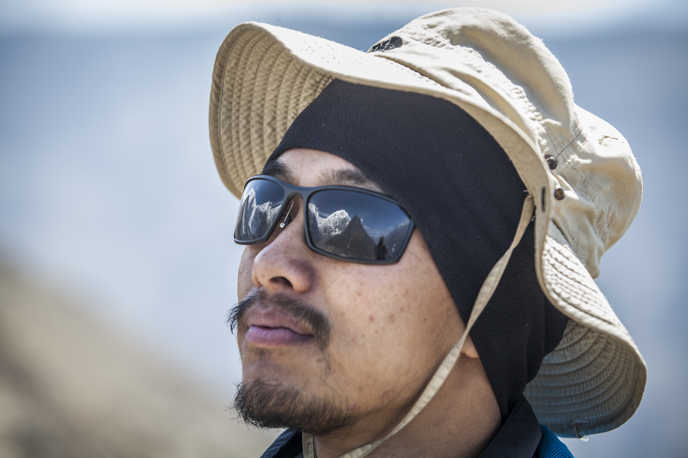

Tika Ram Gurung · Updated May 2026

Tika Ram Gurung
Ph.D. Candidate
University of Nebraska-Lincoln
University of Nebraska-Lincoln
- 📍 Lincoln, NE
- ✉️ tikargrg@gmail.com
 ResearchGate
ResearchGate Google Scholar
Google Scholar LinkedIn
LinkedIn ORCID
ORCID X / Twitter
X / Twitter
Education
2023 – Present
Ph.D. Candidate · Climatology/Meteorology
University of Nebraska-Lincoln · Expected Summer 2026
Dissertation: High-Resolution Climate Simulations and Impacts of Local Human Factors on Hydroclimate and Glacier Dynamics in High Mountain Asia
2013 – 2015
M.S. in Glaciology
Kathmandu University, Nepal
Thesis: Reconstruction of annual mass balance of Rikha Samba Glacier (1995–2013) using Energy-Mass Balance Model
2009 – 2013
B.Sc. in Environmental Science (Hons)
Kathmandu University, Nepal
Work Experience
2021 – 2022 & 2016 – 2020
Research Associate / Cryosphere Analyst
ICIMOD (International Centre for Integrated Mountain Development)
Led glacier monitoring expeditions across 20 glaciers. Installed and maintained automatic weather stations, rain gauges, and temperature loggers. Conducted dGPS surveys and contributed to capacity building in Afghanistan, Bhutan, India, and Pakistan.
Skills
Coding & Analysis
R · Python · MATLAB · GIS · GitHub · Linux / HPC
Numerical Models
WRF · MPAS · Energy-Mass Balance Glacier Model
Field Monitoring
AWS installation/maintenance · dGPS · Rain gauge · Field logistics
Languages
Nepali (native) · English (fluent) · Hindi (excellent) · Urdu (good)
Awards & Fellowships
Outstanding Graduate Award 2024
Department of Earth and Atmospheric Sciences, UNL
Daugherty Water for Food Global Institute Graduate Research Award 2024/2025
University of Nebraska
CMP-Funded M.S. Scholar (2013–2015)
Cryosphere Monitoring Project, Kathmandu University
Memberships
American Geophysical Union · American Meteorological Society · Nebraska Academy of Sciences · European Geophysical Union
Recent Conferences
April 2026 · NAS Lincoln
From Lowlands to Mountains: Irrigation Impacts on South Asian Hydroclimate
Poster · 136th Annual Meeting, Nebraska Academy of Sciences
January 2026 · AMS Houston
Potential Impacts of Irrigation on Hydroclimatic Variability over HMA
Poster · 106th Annual Meeting, American Meteorological Society
December 2024 · AGU Washington D.C.
High-resolution climate simulations of HMA
Poster · AGU Annual Meeting
December 2023 · AGU San Francisco
Understanding the Influence of Soil Moisture on Heatwave Characteristics in the US
Poster · AGU Fall Meeting
Recent Publications
2026 · Climate Dynamics
Evaluating the performance of high-resolution climate simulations over the Central Himalaya and Karakoram
Gurung, T.R., Chen, L., Ali, S.H., Rowe, C., Arriola, F.M. and Ritzema, R.S.
DOI →
2025 · Journal of Glaciology
Modelling seasonal fluctuations and aspect characteristics of ice-cliff melt on the debris-covered Trakarding Glacier
Sato, Y., Buri, P., ... Gurung, T.R., et al.
DOI →
2024 · Environmental Research Letters
Understanding the influence of soil moisture on heatwave characteristics in the contiguous United States
Gurung, T.R. and Chen, L.
DOI →